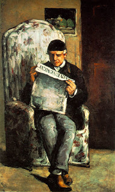

Kiddushin 32 - Difference Between Honor and Reverence Towards one's Parents
What is proper reverence for one's parents, and what is proper honor?
Reverence means that the son may not not sit in his father's place, he may not contradict his father in words in his presence - but he may offer challenges to his father's position until a conclusion is reached.
Honor means that he must give his father food and drink, dress him and cover him, bring him in and take him out.
The same applies to his mother.
The son is not required to pay for his parents' needs out of his own pocket, but merely to expend the effort.